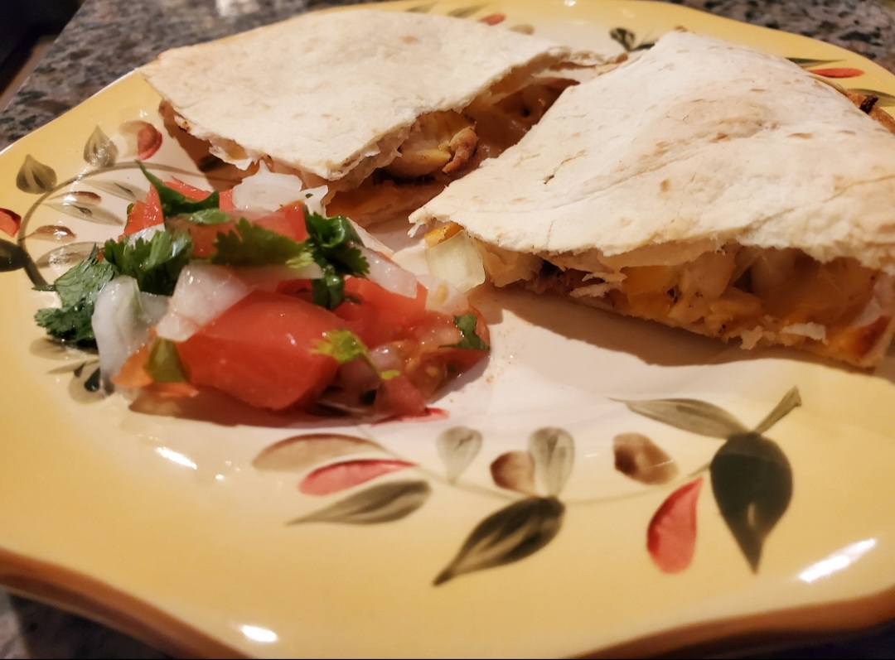

.
Chicken Quesadillas

Description
Quickly transform leftover chicken into cheesy quesadillas served with fresh homemade salsa. Our baked version is
much easier to manage because the quesadilla cooks on both sides at the same time — no messy flipping needed!
Ingredients
- 1 medium (120 grams) tomato, seeded and chopped
- 1/4 cup (40 grams) chopped onion
- 1 tablespoon chopped fresh cilantro
- 1 tablespoon fresh lime juice
- 1/4 teaspoon ground cumin
- 1/8 teaspoon salt
- 1 cup (140 grams) cooked chicken breast, shredded or chopped
- 1/2 cup (40 grams) shredded pepper jack cheese
- 2 (8-inch) low carb whole-wheat tortillas
Servings
- Serves 4
- Serving size is 2 wedges + 1/2 cup of salsa
How to Prepare
- Preheat the oven to 425°F.
- Combine tomato, onion, cilantro, lime juice, cumin and salt in a small bowl, and set aside.
- Lightly coat one side of each tortilla with cooking spray. Place one tortilla, sprayed side down, on a
baking sheet. Top with chicken and cheese. Top with remaining tortilla, sprayed side up.
- Bake 10 minutes, or until golden brown. Cut into 4 wedges. Serve 2 wedges with 1/2 cup salsa.
Nutrition Information
Calories: 358kcal | Carbohydrates: 18g | Protein: 38g | Fat: 15g | Saturated Fat: 7g | Monosaturated Fat: 1g
Cholesterol: 85mg | Sodium: 616mg | Potassium: 327mg | Fiber: 11g | Sugar: 2g | Vitamin A: 2% | Vitamin C: 15% | Calcium: 27%
| Iron: 12%
Recipe obtained from: MyFitnessPal
.